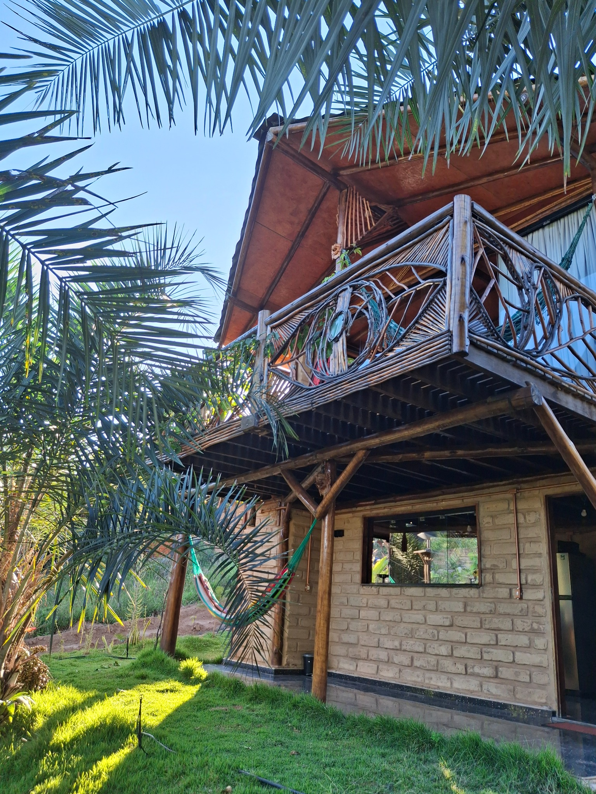
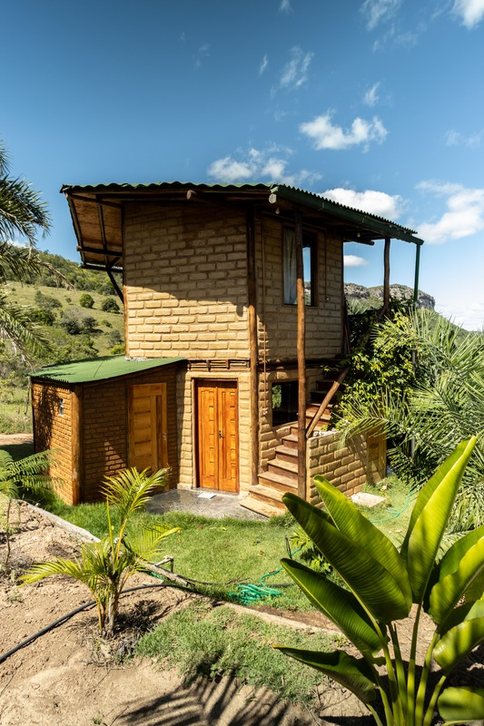
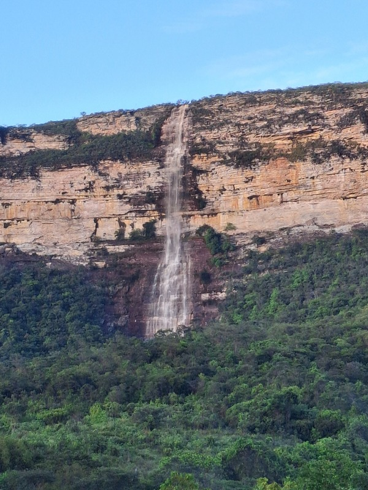

Conforto para ficar
Quarto com cama de casal, cortina blackout, ventilador, TV, roupas de cama e toalhas.

POVOADO DA RAPOSA · INSTITUTO TORUS
Entre a terra, o céu e a cachoeira.
Encontre seu lugar na Chapada Diamantina.
FEITA DE TERRA, CUIDADO E AFETO
A Cacau House nasceu do encontro entre conforto e natureza. Dentro do Instituto Torus, no Povoado da Raposa, a bioconstrução dá forma a um jeito mais simples e acolhedor de habitar.
Abra espaço para um café sem pressa, uma pausa na rede e a vista da Cachoeira do Fundão. Aqui, o convite é viver o ritmo da Chapada.
Explore nosso guia de boas-vindas →
SEU CANTINHO NA CHAPADA
Um espaço inteiro para aproveitar a dois
ou ter um tempo só seu.
Quarto com cama de casal, cortina blackout, ventilador, TV, roupas de cama e toalhas.
Fogão e forno, geladeira, micro-ondas, air fryer, liquidificador e utensílios para suas refeições.
Deck com sofá e redes, jardim e terraço. Uma vista para acompanhar o passar do dia.
Wi-Fi Starlink, bancada para trabalhar, banheiro privativo com chuveiro quente e uma vaga de estacionamento.
Quarto, cozinha, banheiro e varandas. Toque nas fotos para ampliar.

MAIS DO QUE SE HOSPEDAR
Na Chapada Diamantina, o caminho também faz parte da experiência. Conheça as trilhas, os mirantes e as cachoeiras da região, com orientação local para planejar cada passeio.
A vista da Cachoeira do Fundão e o verde da Raposa fazem parte da sua estadia.
No Instituto Torus, arte, permacultura e cuidado com o território se encontram.
Converse com a gente sobre guias e experiências locais no Povoado da Raposa.
ANTES DE VIR, SINTA UM POUQUINHO
Dê o play e conheça nosso espaço pelo olhar de quem vive aqui.
Assistir apresentação no Instagram ↗Se o vídeo não carregar, assista no Instagram ↗
QUEM JÁ VIVEU ESSE ENCONTRO
“Excelente estadia!!!”
Destaca o charme do chalé e a vista. Recomenda se preparar para a estrada e levar os itens necessários para a estadia.
RESUMO DA AVALIAÇÃOGostou da tranquilidade, do cuidado com a limpeza e da atenção da anfitriã, em meio à natureza e às montanhas.
RESUMO DA AVALIAÇÃOO CAMINHO ATÉ AQUI
Estamos no Instituto Torus, Povoado da Raposa, região de Novo Acre, em Iramaia — Chapada Diamantina.
Ver localização exata do chalé ↗O acesso é por estrada de terra. Pelo guia, são aproximadamente 17 km a partir de Ibicoara ou 39 km a partir de Iramaia. Confirme a rota e as condições atuais com Nathália, especialmente em períodos de chuva. Planeje chegar durante o dia. Veja como chegar.
Check-in das 10h às 17h e check-out até as 12h. Combine sua chegada antecipadamente. Flexibilidade de horários depende da disponibilidade.
Sim! Seu pet é bem-vindo. Mantenha-o sob supervisão, pois há outros animais nas propriedades vizinhas.
Fale com Nathália pelo WhatsApp ou consulte o anúncio no Airbnb. Valores, condições e disponibilidade são confirmados no atendimento ou na plataforma.
Destine à composteira apenas os resíduos orgânicos permitidos. No checkout, leve o restante do lixo para descarte adequado na cidade: a comunidade não tem coleta de lixo. Use a água com cuidado. Festas não são permitidas. Consulte as orientações do guia.
PARA QUEM ESTÁ DE MALAS PRONTAS
Como chegar, cuidados com a casa, contatos locais e ideias para explorar a região.
Abrir guia de boas-vindas →SEU PRÓXIMO RESPIRO COMEÇA AQUI
Eu sou a Nathália. Fale comigo para consultar datas,
tirar dúvidas e planejar seus dias na Cacau House.